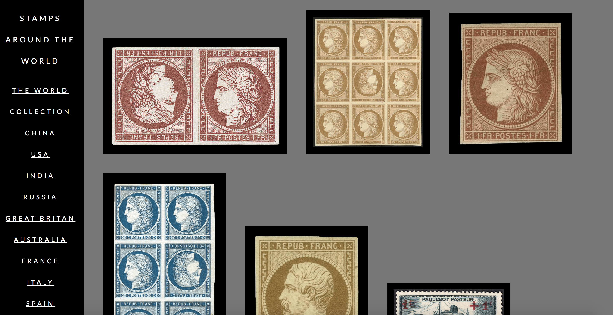
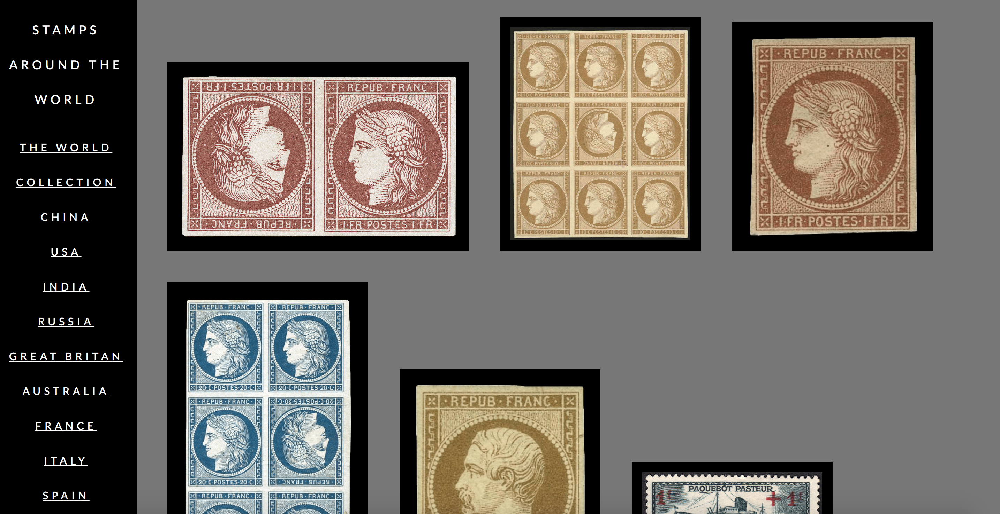
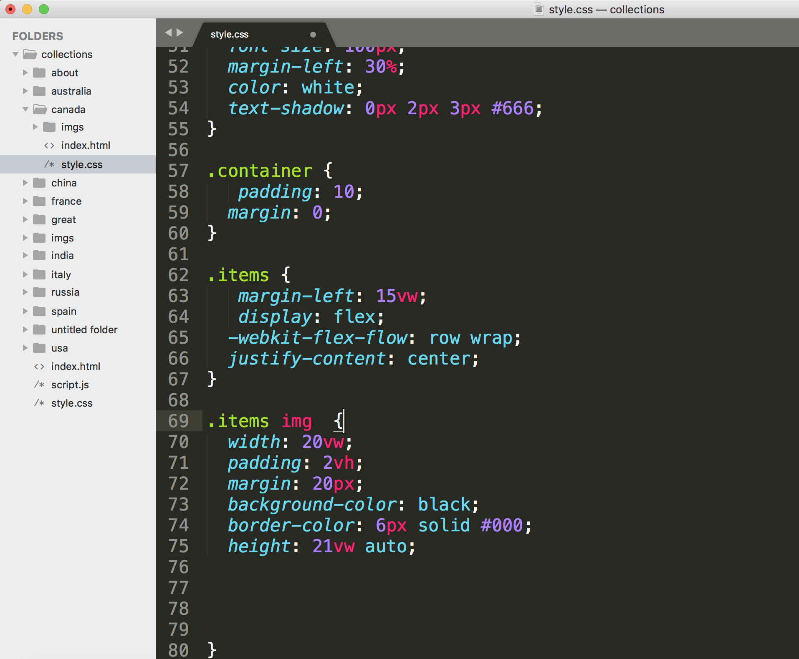
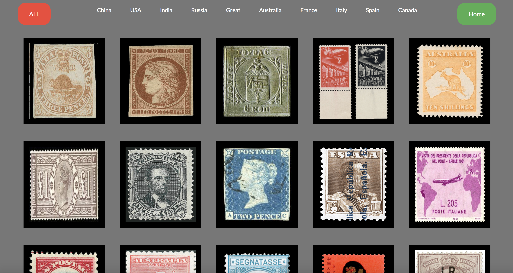
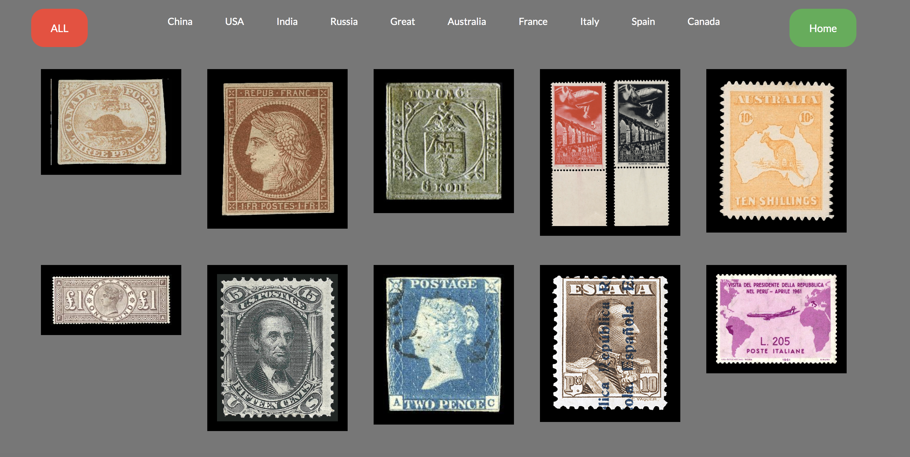
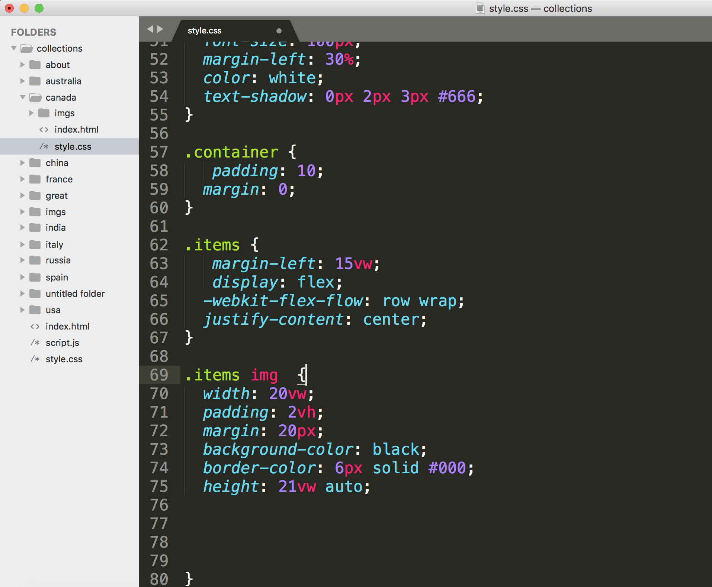
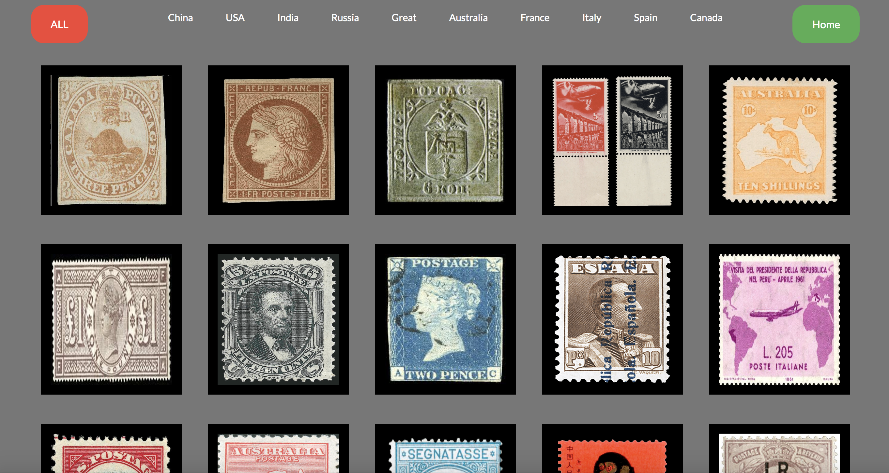
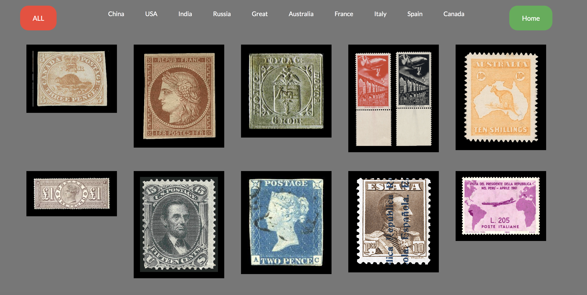

Collections Project: Stamps
People have been collecting stamps for many years, but there are only few stamps in each country that have a high value of worth in currency. However not all stamp collectors, care about the value, its about the interest in history, geography and art of specialism that draws the passion for completeness.
Stamps can be filtered in many catogories, i choose to do countries, as there are so many stamps in the world that only a few have seen, ever.
Inspiration
The Form of this collection stands as an archive of the most valuable 10 stamps in 10 countries.
The Function of this collection is to be able to help users filter through stamps from different countries and view individual stamping collections in order from the lowest to highest to lowest value of worth.
Design Process and Research
I collected 10 Stamps from 10 Cities that were the highest and most valuable stamps. Each Stamp was named by its country and a number to signify the order to value and worth.
Stamp collecting is generally accepted as one of the areas that make up the wider subject of philately, which is the study of stamps.
Postage stamps are often collected for their historical value and geographical aspects and also for the many subjects depicted on them, ranging from ships, horses, and birds to kings, queens and presidents
- I thought it was interesting that some stamps were valued to the highest price because they were 'misprinted' or torn.
Excution 1


 

 





While creating layouts for the stamps,I was having trouble laying out stamps in equal sizes, as some were vertical and some were horizontal.
User Testing
When I first user tested my website, the feedback I received was
- To make my stamps have a standard layout for each country.
- Add Navigation.
- Creating backgrounds for each stamp so it looks systemized.
- Add a view all and back button in the filters section of the world stamp collection.
Execution 2 - Final
For my final execution i created a standard structure to layout the stamps for the countries sepateraly, however on the world page, i wanted them scattered as they would be in a stamp album, strategically placed, according to the width and height of the stamp.
My Design reflects the usability of finding and filtering valuable stamps through countries of the world.
Challenges
Some challenges I faced were
- Subgrouping stamps from all over the world.
- Creating layouts to fit stamps without stretching them.
- Using Text as an additional tool, to add information about each stamp.
- Creating Flip Cards to present information.
Learnings
Through my research on collecting my stamps, I learned about
- The values and significance each stamp has played in its historic era and time.
- To be able to distinguish cultural significance in each stamp and filter them.